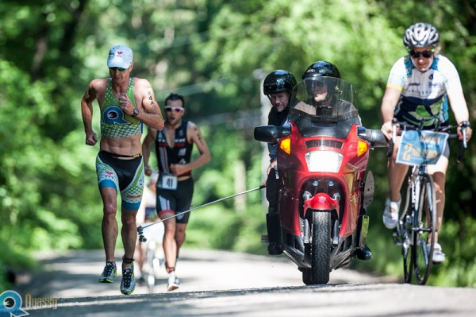

If you are interested in working with Richie as a coach, you can contact him here.
Career Highlights
| Year | Place | Event |
|---|---|---|
| 2015 | 1st | Pucon 70.3 |
| 2014 | 9th | 70.3 World Ranking |
| 2014 | 2nd | Miami 70.3 |
| 2014 | 1st | Muskoka 70.3 |
| 2014 | 2nd | Ironman Boulder |
| 2014 | 2nd | Rev3 Series |
| 2014 | 1st | Texas 70.3 |
| 2014 | 2nd | 70.3 Asia-Pacific Champs |
| 2013 | 6th | 70.3 World Ranking |
| 2013 | 2nd | Rev3 Florida *fastest run split |
| 2013 | 2nd | Austin 70.3 *fastest bike split |
| 2013 | 2nd | Rev3 Branson |
| 2013 | 2nd | Rev3 Quassy |
| 2013 | 1st | St. Croix 70.3 |
| 2013 | 1st | Texas 70.3 |
| 2013 | 3rd | 70.3 Latin American Champs |
| 2012 | 1st | Rev3 Series Winner |
| 2012 | 3rd | 70.3 Final World Ranking |
| 2012 | 10th | 70.3 World Championships |
| 2012 | 1st | Rev3 Wisconsin |
| 2012 | 1st | Rev3 Portland |
| 2012 | 1st | Rev3 Quassy |
| 2012 | 1st | 70.3 Mid-Year World Ranking |
| 2012 | 3rd | 70.3 Latin American Champs |
| 2011 | 3rd | 70.3 World Ranking |
| 2011 | 2nd | 70.3 Asia-Pacific Champs |
| 2010 | 5th | 70.3 World Championships |
| 2009 | 3rd | German National Championships |
| 2009 | 1st | Austin Triathlon – Course Record |
| 2009 | 1st | Longhorn 70.3 |
| 2009 | 4th | First Ironman – Arizona |
| 2009 | 1st | Phuket Triathlon |
| 2008 | 3rd | 70.3 World Championships |
| 2008 | 1st | Longhorn 70.3 |
| 2007 | 5th | 70.3 World Championships |
| 2007 | 1st | Köln Half Ironman |
| 2006 | 1st | Timex Bike Prime @ World Championships |
| 2006 | 3rd | 70.3 World Championships |
| 2004 | 1st | Team Relay World Championships |
| 2003 | 3rd | Oceana Championships |
| 2003 | 2nd | Australian National Championships |